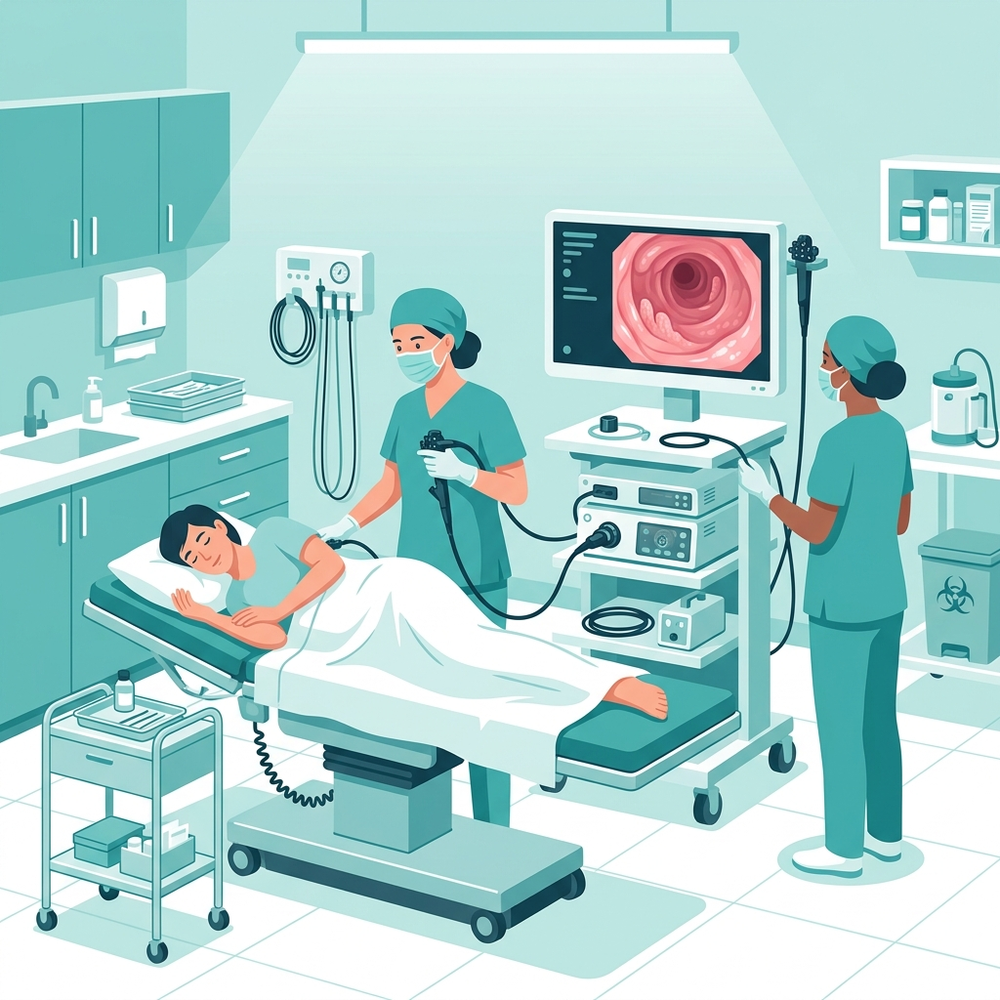

Diagnóstico e tratamento de patologias do trato gastrointestinal, como gastrites, refluxo, doenças inflamatórias intestinais e cuidados com o fígado.
Saber mais
Realização de exames endoscópicos com foco no conforto e segurança do paciente, fundamentais para a prevenção do câncer colorretal e diagnóstico preciso.
Agendar ExameA satisfação e o bem-estar de quem confia em nosso trabalho.
"A Dra. Luciana é uma ótima profissional, agradeço toda dedicação que vem tendo no meu caso, não mediu esforços para achar uma solução para o meu problema. E hoje posso dizer que se estou bem é graças a ela."
"Melhor médica não há! Tenho orgulho em falar de você para todo mundo. Além de excelente profissional, é um ser humano maravilhoso. Se preocupa com seus pacientes, super dedicada, atenciosa e acima de tudo humana. Só tenho a agradecer por tudo o que faz por mim e minhas filhas. Gratidão sempre."
"Dra, desculpe, hoje é domingo, mas estava falando com uma amiga sobre o tanto que estou apaixonada por minha médica porque ela dá uma atenção para o paciente que não existe nada igual... Adivinha? Ela também nunca viu uma médica igual na vida. Olha... Você não existe..."
Investigação detalhada de intolerâncias à lactose, glúten (doença celíaca) e outras sensibilidades alimentares que afetam sua qualidade de vida.
Marcar Avaliação